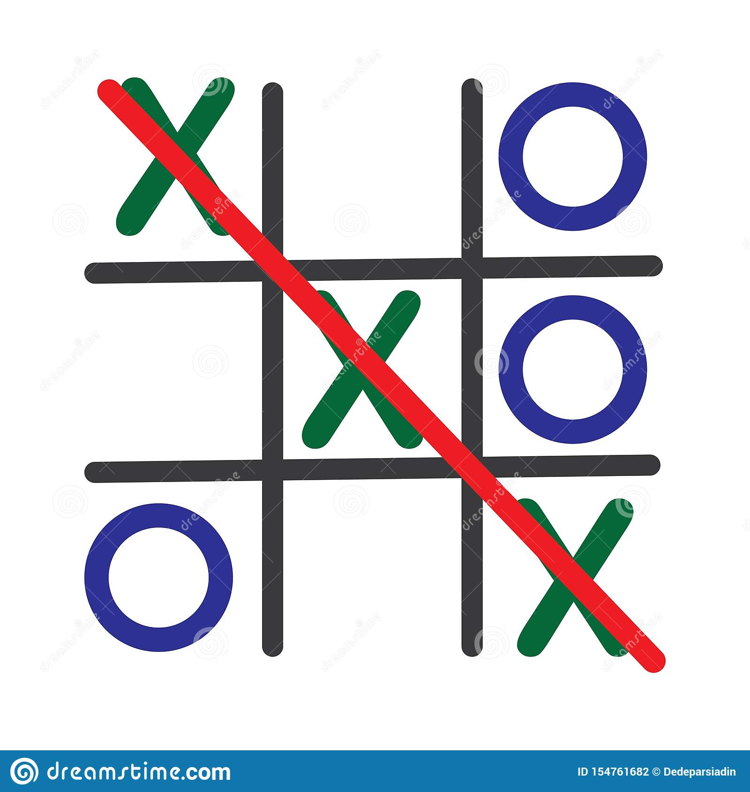

Have the first player go first. Though traditionally, the first
player goes with "X", you can allow the first player to decide
whether to go with "X"s or to go with "O"s. These symbols will be
placed on the table, in an attempt to have three of them in a row.
If you're going first, then the best move you can make is to move
into the center. This will maximize your chances of winning since
you'll be able to create a row of three "X"s or "O"s in more
combinations (4) this way than if you chose a different square.
Have the second player go second. After the first player goes, then
the second player should put down his symbol, which will be
different from the symbol of the first player. The second player can
either try to block the first player from creating a row of three or
focus on creating their row of three. Ideally, the player can do
both.
Keep alternating moves until one of the players has drawn a row of
three symbols or until no one can win. The first player to draw
three of their symbols in a row, whether it is horizontal, vertical,
or diagonal, has won tic-tac-toe. However, if both players are
playing with optimal strategy, then there's a good chance that no
one will win because you will have blocked all of each other's
opportunities to create a row of three.

Keep practicing. Contrary to popular belief, tic-tac-toe isn't
purely a game of chance. Some strategies can help you optimize your
skills and to become an expert tic-tac-toe player. If you keep
playing, you'll soon learn all of the tricks to make sure you win
every time -- or, at least, you'll learn the tricks to make sure you
never lose. It is like 0's and x's.